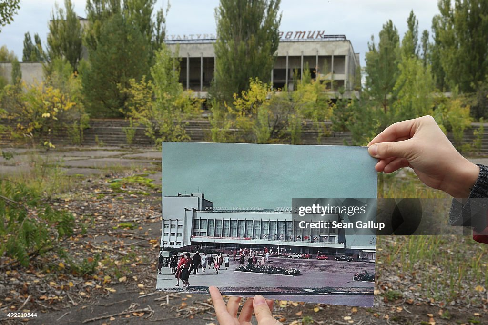
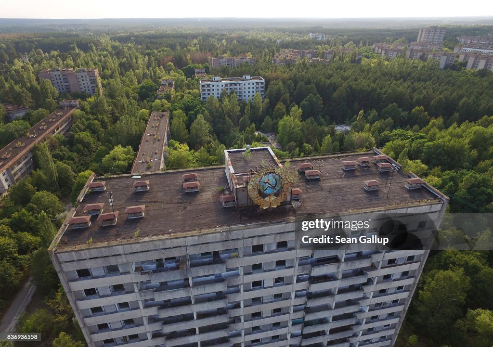

Pripyat, also known as Prypiat, is an abandoned industrial town in the
Kyiv Oblast, Ukraine, near the Ukraine-Belarus border. Named after the
nearby Pripyat River, construction on it start on the 4th of February
1970. The abandoned city of Chernobyl, which is what the Nuclear Power
Plant was named after, is 16.5 kilometers southeast of Pripyat.
Pripyat was officially proclaimed as a city in 1979 and would eventually
grow to a peak population of 49,360. Residents of Pripyat worked at the
nearby Chernobyl Nuclear Power Plant, as that was the whole reason the
city was built. Pripyat was a model city, meaning it was specifically
built to serve as a physical and ideological showcase of superiority. In
this specific case, Pripyat was used to demonstrate the technological and
economic success of the Soviet Union's nuclear program. Model cities also
usually have better funding, access to consumer goods, well-stocked shops,
railway stations, and more.

Unlike cities of military importance (a closed city, town or settlement
where residency or travel is restricted), the city of Pripyat was not
restricted before The Accident as Nuclear Power Stations were deemed safer
than other types of power plants by the Soviet Union. Some would describe
Pripyat as “peaceful” or “lively” before the accident.
On the 27th of April 1986, roughly 36 hours after The Accident at the
Chernobyl Nuclear Power Plant, a total evacuation of Pripyat was started.
Radios and loudspeakers in Pripyat all played the same recorded voice,
instructing citizens to pack documents, only the most necessary items, and
food. The announcement claimed that the evacuation would be a temporary
measure.
The Soviet Union sent a fleet of roughly 1,200 buses for the evacuation.
In under 4 hours, nearly 49,000 people left their homes under the guise
that they would return in just a few days' time.
None ever returned to live in Pripyat, as it was declared too
radioactively dangerous for human habitation for, at the least, 24,000
years.
The city is now left to rot.

Back To Top ↑